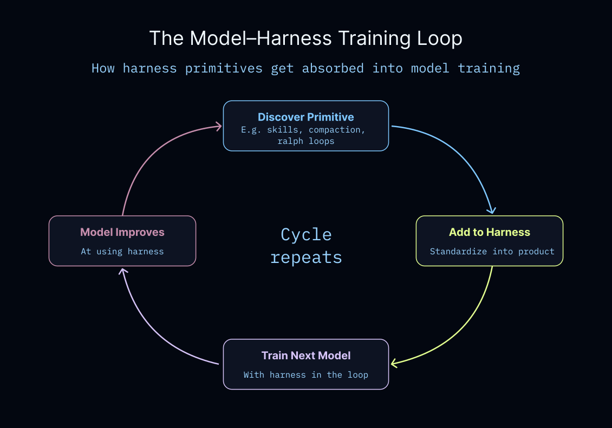

Fleet 成为月度更新中心
Agent Builder 更名为 LangSmith Fleet，并加入 agent identity、sharing、permissions。
Why：三月更新很多，单条公告分散；newsletter 用一个月度视角把产品、开源、活动和客户动态合到一起。 What：本期主线是 LangSmith Fleet 成型：Polly GA、Agent Builder 更名 Fleet、Skills、Sandboxes、Deploy CLI、ABAC、NVIDIA 集成与 Interrupt 2026 售票同步推进。 How：文章按 Product Updates、Open Source、Interrupt、Speak the Lang、Events、Customer & integration highlights 聚合，把生态进展压成一组可扫描信号。
三月更新很多，单条公告分散；newsletter 用一个月度视角把产品、开源、活动和客户动态合到一起。
本期主线是 LangSmith Fleet 成型：Polly GA、Agent Builder 更名 Fleet、Skills、Sandboxes、Deploy CLI、ABAC、NVIDIA 集成与 Interrupt 2026 售票同步推进。
文章按 Product Updates、Open Source、Interrupt、Speak the Lang、Events、Customer & integration highlights 聚合，把生态进展压成一组可扫描信号。

三月 newsletter 的核心不是单个功能，而是 LangSmith Fleet 周边能力成型：Polly GA、Skills、Sandboxes、权限、Deploy CLI 和 NVIDIA 集成一起把 agent 从个人构建推向团队管理。Interrupt 2026 和社区活动则把这条产品线推到企业级叙事里。
Agent Builder 更名为 LangSmith Fleet，并加入 agent identity、sharing、permissions。
Sandboxes private preview、Deploy CLI、ABAC 和 Polly GA 都围绕更安全、更可控的 agent 工作流展开。
NVIDIA 集成、Interrupt 2026、workshop 和客户集成动态把产品更新连接到社区与企业采用。
Polly、Fleet、Skills、Sandboxes、ABAC 这些更新共同回答一个问题：企业内部的多个 agent 如何被创建、授权、运行和维护。
Deploy CLI 让 agent 可以从终端一步部署到 LangSmith Deployment；这和 Fleet 的可视化管理形成互补。
Interrupt 2026、Speak the Lang、hosted/community events 和集成亮点让本期 newsletter 更像生态温度计，而不是 release notes。

| 标题 | March 2026: LangChain Newsletter |
| 日期 | April 1, 2026 |
| 作者 | The LangChain Team |
| 阅读时间 | 4 min |
| 分类 | Company Announcements |